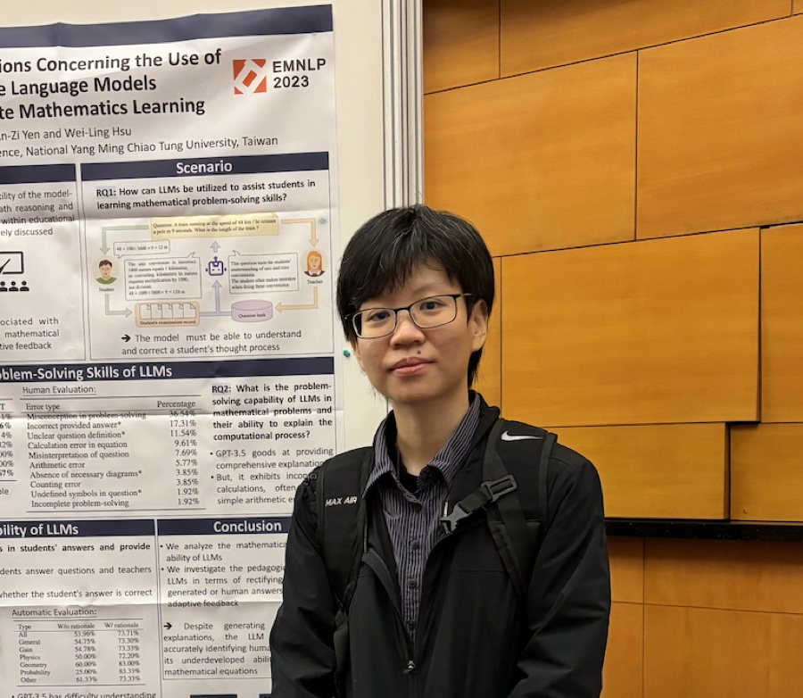

Multimodal understanding & situated intelligence
How can AI integrate what it sees, hears, and reads to understand an environment, an event, and what the user needs right now?
See papersI lead the NYCU NLP Lab, where we build personalized, trustworthy, and efficient AI that brings together multimodal perception, knowledge, and reasoning to support people in daily life.

Dr. An-Zi Yen is an Assistant Professor in the Department of Computer Science at National Yang Ming Chiao Tung University. Her research interests include natural language processing and information retrieval, with a current focus on personal AI assistants that understand a person's situation and decide when and how to help.
Her work has been published in AAAI, EMNLP, WWW, SIGIR, and CIKM. She received the Honorable Mention of the ACLCLP Doctoral Dissertation Award in 2020 and was a distinguished PC member at IJCAI 2023. She served as web chair of SIGIR 2023 and as a PC member of AAAI, IJCAI, CIKM, and EACL.
Four research directions, one goal: AI that understands people and the world they live in, and helps them well.
Each direction links to the papers on the lab site.
How can AI integrate what it sees, hears, and reads to understand an environment, an event, and what the user needs right now?
See papersHow can AI use personal knowledge and interaction history to adapt to each user and each task?
See papersHow can AI reason from evidence and give help that is understandable, checkable, and appropriate?
See papersHow can AI allocate models and data to what a task needs, balancing quality against cost?
See papers